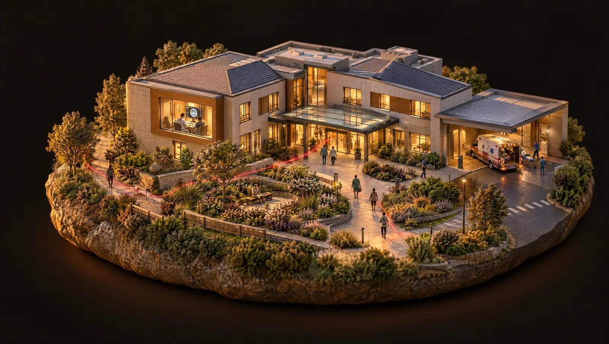
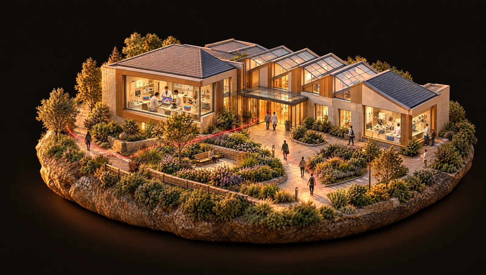
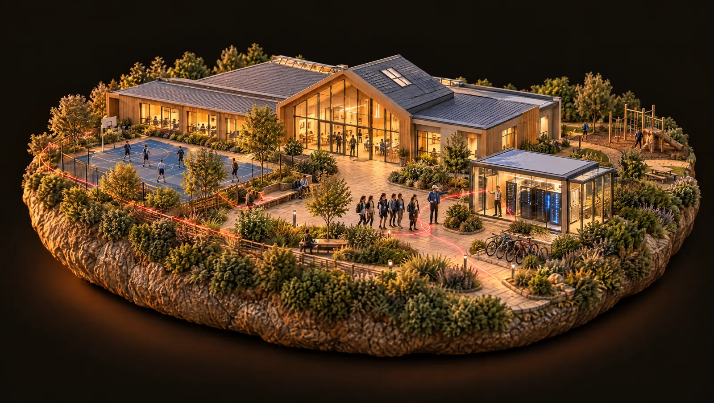
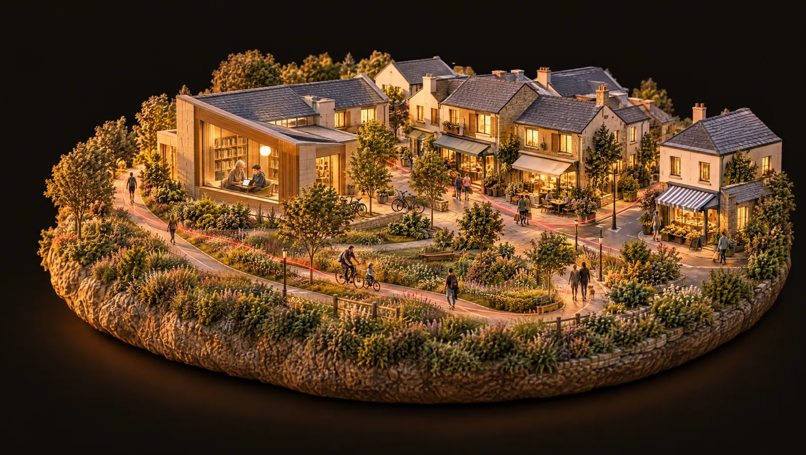
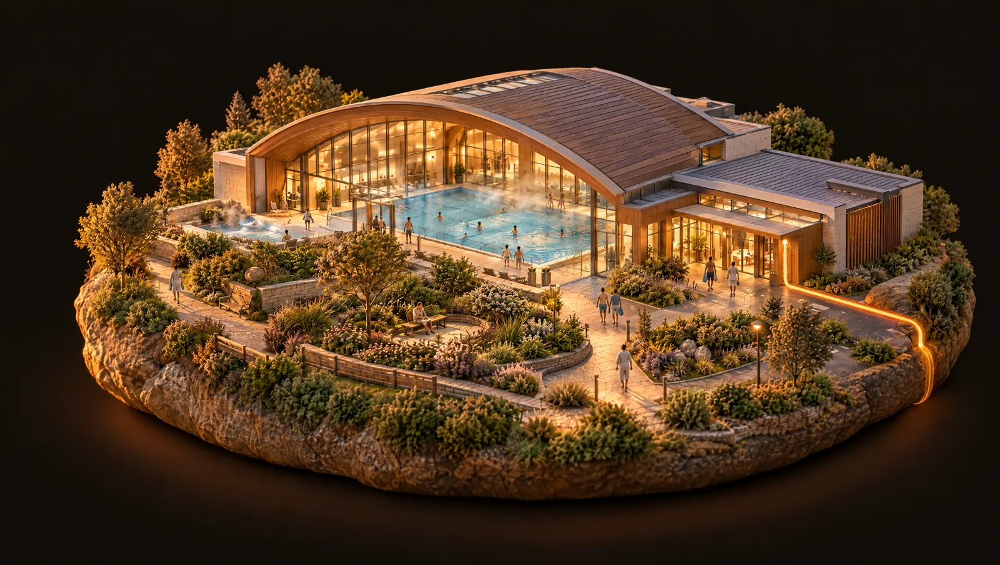
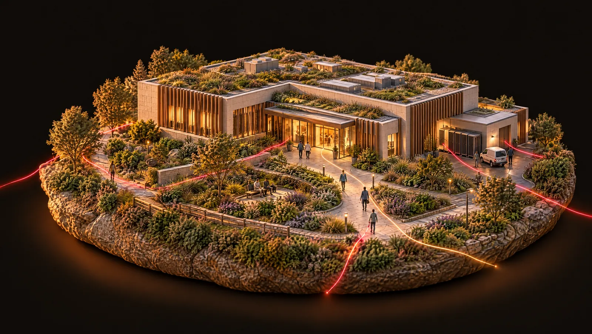

01 / 06 Care
Hospital
A radiologist opens a patient’s scan. Somewhere, a family is waiting for what it shows.
Medical images, ready when the care team needs them
Fly through the community
Scroll to fly through a small community connected by Equinix, from the hospital to the data center at its heart.
Scroll to fly
01 / 06 Care
A radiologist opens a patient’s scan. Somewhere, a family is waiting for what it shows.
Medical images, ready when the care team needs them
02 / 06 Discovery
In Sydney, researchers compare one child’s cancer with cases studied on the other side of the world.
Comparing notes across the world for every child with cancer
03 / 06 Opportunity
A student walks into a data center for the first time and asks how it all works.
From a school tour to a technician’s badge
04 / 06 Community
In Minooka, Illinois, a public bike path runs along the data center site, and land is being donated for a future fire station.
A neighbour that plans to stay for decades
05 / 06 Responsible growth
Early swimmers in Saint-Denis are in water warmed, in part, by heat that once left a data center unused.
Warm water for a neighbourhood pool in Saint-Denis
06 / 06 Every thread
Private interconnection for care and research. Heat recovered for neighbours. People who keep it running, and who volunteer down the road.
Our five community promisesAn illustrative AI-generated film, not a real place or network. Each story refers to its named location.
Every thread begins somewhere